MyMechanics 튜토리얼
이 튜토리얼은 MyMechanics를 처음 여는 분을 위한 따라 하기 안내입니다. 빈 화면에서 시작해 스케치 → 치수 → 돌출 → 필렛 → 구멍 → 패턴으로 첫 부품을 만들고, 이어서 스윕, 판금, 어셈블리와 메이트, 모션 스터디, 단면도와 부품표가 들어간 도면, 정적 해석까지 차례로 해 봅니다. 단계마다 그 순간의 화면을 넣었습니다. 빨간 번호는 눌러야 할 곳이나 살펴볼 곳입니다.
전체를 따라 하는 데 한 시간쯤 걸립니다. 각 과는 따로 해도 되지만, 1–4과는 같은 부품을 이어서 만들고 9과에서 그 부품의 도면을 그립니다. 기능 하나하나의 자세한 설명은 사용 설명서(F1)에 있습니다.
1과. 첫 스케치 — 사각형과 치수
모든 부품은 평면 위의 2D 스케치에서 시작합니다. 스케치에 선을 그리고, 구속 조건과 치수로 크기와 위치를 정해 둡니다.
- 시작 화면의 새 부품을 누르거나 Ctrl+N을 누릅니다. 트리에 정면·윗면·우측면과 원점이 있는 빈 부품이 열립니다.
- CommandManager의 피처 탭에서 스케치를 누릅니다. 왼쪽에 스케치 PropertyManager가 나오면 윗면을 고릅니다. 그래픽 영역에서 평면을 클릭해도 됩니다.
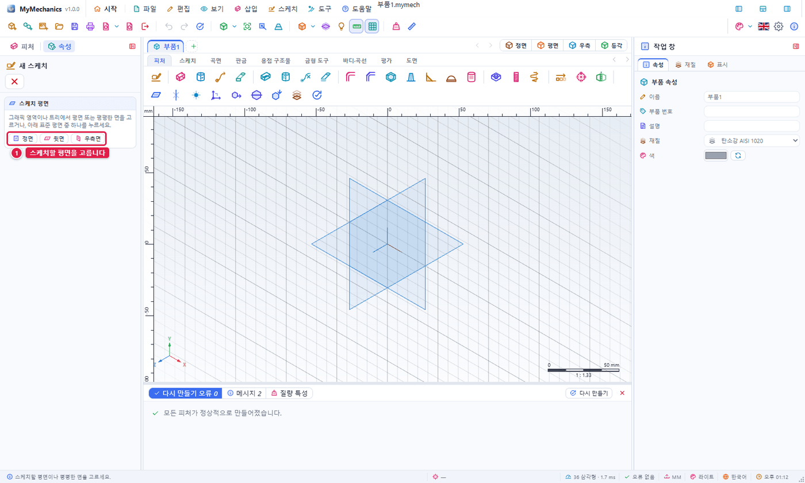
스케치할 평면 고르기 - 보기가 윗면에 수직으로 바뀌고 CommandManager가 스케치 탭으로 넘어갑니다. 중심 사각형을 누르고, 먼저 원점을 클릭한 다음 바깥쪽에서 모서리를 클릭합니다. 원점에 붙으면 주황 원이 보이고 일치 구속이 저절로 들어갑니다.
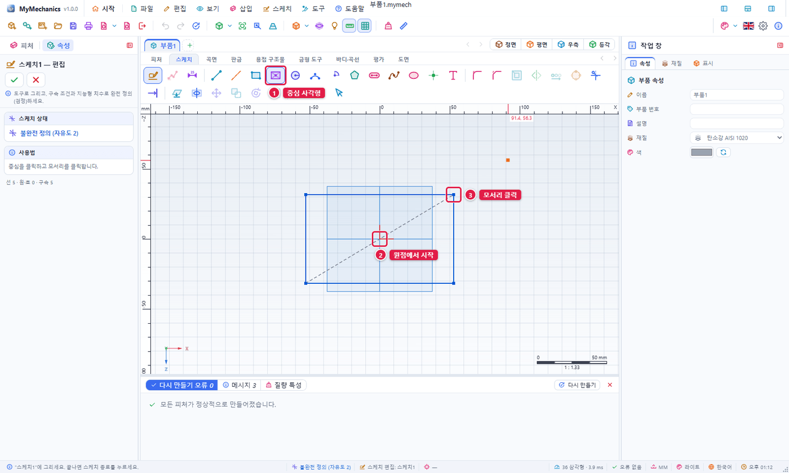
원점에서 시작하는 중심 사각형 - 아직 선이 파란색입니다. 크기가 정해지지 않아 움직일 수 있다는 뜻입니다. 지능형 치수(D)를 누르고 가로선을 클릭해
80, 세로선을 클릭해50을 넣습니다. 선이 모두 검은색이 되고 상태 표시줄에 완전 정의됨이 나오면 성공입니다.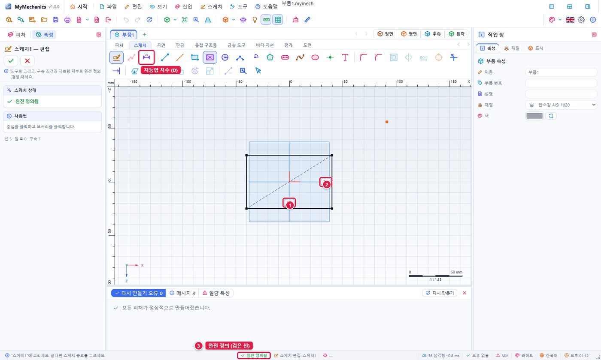
치수 두 개로 완전 정의된 스케치 - 스케치 종료를 누릅니다. 트리에 스케치1이 생깁니다.
치수 글자를 두 번 클릭하면 값을 바꿀 수 있습니다. 숫자 입력란에는
100/3,25.4in처럼 계산식과 단위도 쓸 수 있습니다.
2과. 돌출 — 스케치를 입체로
- 스케치1을 고른 채 피처 › 돌출 보스를 누릅니다.
- PropertyManager의 깊이에
20을 넣습니다. 그래픽 영역에 노란 미리보기가 나옵니다. 방향을 바꾸려면 반대 방향 확인란을 켭니다. - ✔(Enter)를 누릅니다. 트리에 보스-돌출1이 생기고, 그 아래에 스케치1이 들어갑니다.
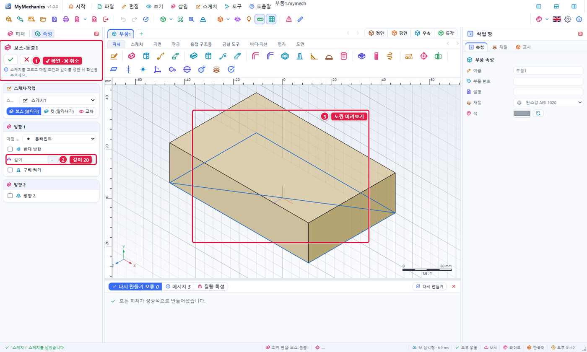
돌출 PropertyManager와 미리보기
보기는 왼쪽 끌기로 돌리고, 오른쪽 끌기로 옮기고, 휠로 확대·축소합니다. F를 누르면 전체가 화면에 맞춰집니다. Ctrl+7은 등각 보기입니다.
3과. 필렛과 구멍
모서리 둥글게 하기
- 필렛을 누릅니다.
- 블록의 세로 모서리를 하나씩 클릭합니다. 고른 모서리는 분홍 선택 상자에 쌓입니다. 뒤쪽 모서리는 보기를 돌려서 고르세요. 면을 클릭하면 그 면의 모든 모서리가 한 번에 들어갑니다.
- 반지름
5를 넣고 ✔를 누릅니다.
필렛 — 고른 모서리와 반지름
카운터보어 구멍
- 구멍 가공 마법사를 누릅니다.
- 구멍 유형에서 카운터보어를, 크기에서 M8을 고릅니다. 볼트가 지나갈 구멍 지름과 머리가 들어갈 자리 크기가 표준 값으로 채워집니다.
- 블록 윗면에서 원점 오른쪽(X 15 mm쯤)을 클릭합니다. 빨간 미리보기가 구멍입니다. 마침 조건은 관통으로 둡니다.
- ✔를 누릅니다. 구멍 위치는 구멍위치 스케치로 저장되므로 나중에 치수를 넣어 정확히 옮길 수 있습니다.
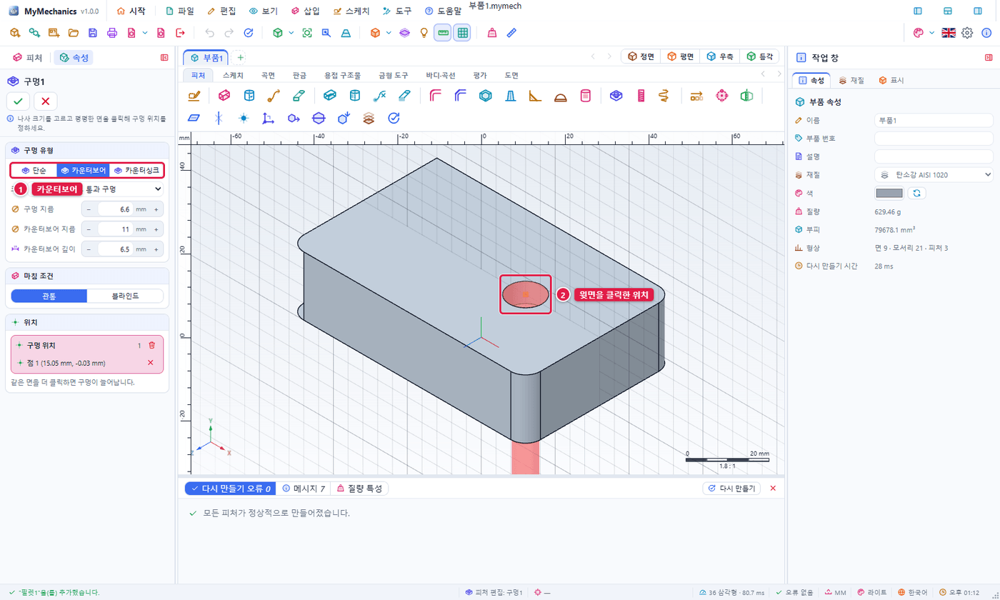
구멍 가공 마법사 — 카운터보어 M8
4과. 패턴 — 구멍 네 개
구멍을 하나 더 그리는 대신 패턴으로 복사하면, 원본 구멍을 고칠 때 복사본도 함께 바뀝니다.
- 트리에서 구멍1을 클릭해 고릅니다.
- 원형 패턴을 누릅니다. 패턴할 피처 목록에 구멍1이 들어 있습니다.
- 축은 Y, 전체 각도
360, 인스턴스 수4, 동등 간격을 켭니다. - ✔를 누르면 원점을 중심으로 구멍 네 개가 생깁니다.

원형 패턴 — 축 Y, 인스턴스 4 - Ctrl+S로 저장합니다. 부품·어셈블리·도면이 모두
.mymech파일 하나에 들어갑니다.
트리에는 피처가 만든 순서대로 쌓여 있습니다. 피처를 두 번 클릭하면 다시 편집할 수 있고, 앞의 치수를 바꾸면 뒤의 필렛·구멍·패턴이 새 형상에 맞춰 모두 다시 만들어집니다. 트리 맨 아래 파란 롤백 바를 위로 끌면 그 아래 피처를 잠시 빼고 볼 수 있습니다.

5과. 스윕 — 경로를 따라 관 만들기
스윕은 닫힌 윤곽을 경로를 따라 쓸어서 입체를 만듭니다. 휘어진 관이나 손잡이, 스프링을 만들 때 씁니다.
- 새 부품을 엽니다(Ctrl+N).
- 윗면에 스케치를 열고 원점을 중심으로 원 두 개를 그립니다. 지름
16과12를 넣으면 두께 2 mm의 관 단면이 됩니다. 스케치를 종료하고 이름을 윤곽으로 바꿉니다(F2). - 정면에 스케치를 열고 원점에서 위로 60 mm, 비스듬히 오른쪽 위로, 다시 수평으로 이어지는 선을 그립니다. 열린 선이어도 됩니다. 스케치를 종료하고 이름을 경로로 바꿉니다.
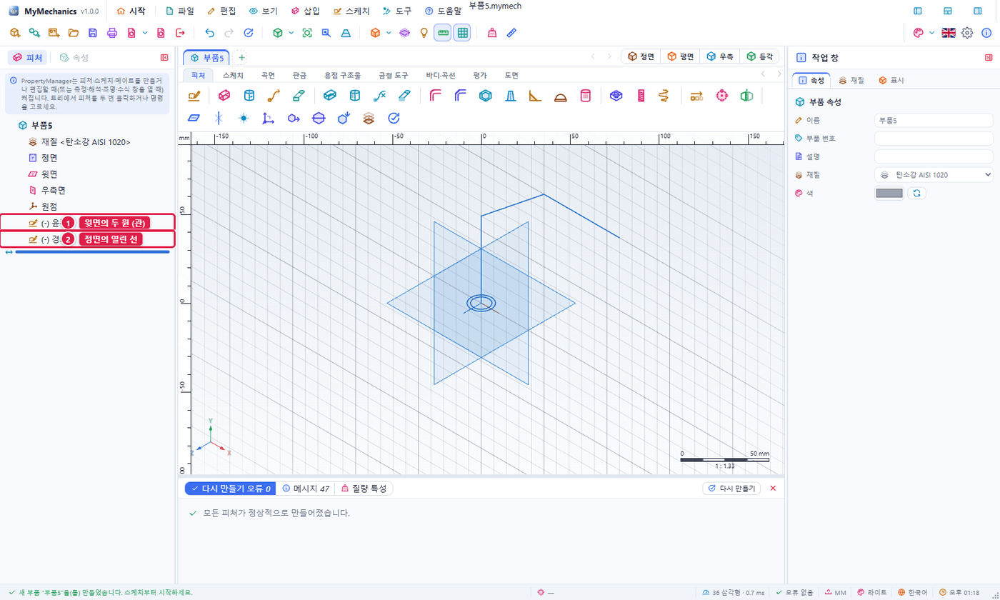
윤곽(윗면의 두 원)과 경로(정면의 열린 선) - 스윕 보스를 누릅니다. 윤곽에 윤곽 스케치, 경로에 경로 스케치를 고릅니다. 윤곽은 경로의 시작점에서 경로와 직각인 평면에 있어야 합니다.
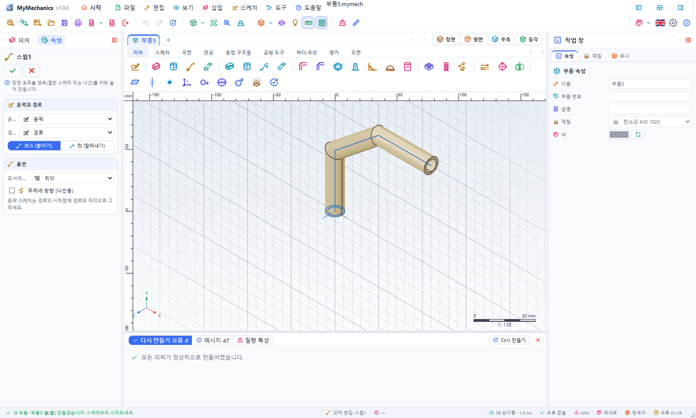
스윕 PropertyManager — 윤곽과 경로 - ✔를 누르면 경로를 따라 굽은 관이 만들어집니다.
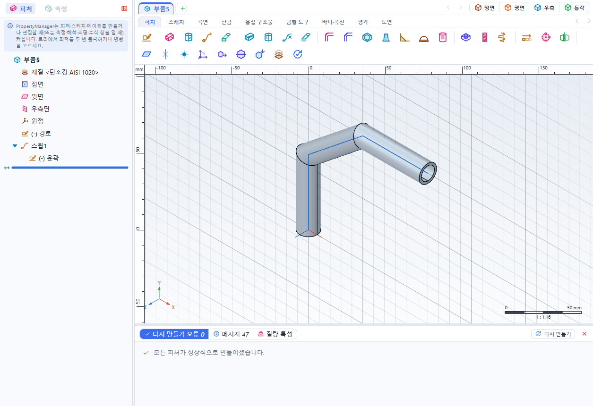
완성된 스윕 관
경로로 나선(피처 › 나선)을 쓰고 프레네 방향을 켜면 스프링이 됩니다. 예제 압축 스프링을 열어 보세요.
6과. 판금 — 플랜지와 전개도
판금 부품은 두께가 일정한 판을 굽혀 만듭니다. 굽힌 모양과 펼친 모양(전개도)을 오가며 볼 수 있습니다.
- 새 부품을 열고 윗면에 120 × 70 사각형 스케치를 그린 뒤 종료합니다.
- CommandManager의 판금 탭에서 베이스 플랜지를 누릅니다. 두께, 굽힘 반지름, K 계수를 확인하고 ✔를 누릅니다.
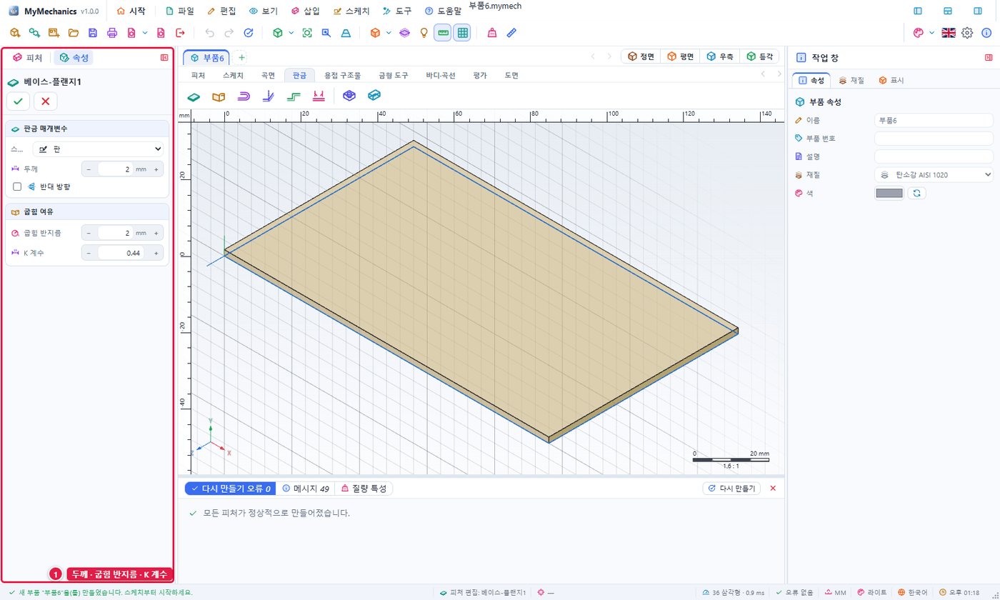
베이스 플랜지 — 두께·굽힘 반지름·K 계수 - 판 윗면의 오른쪽 짧은 모서리를 클릭해 고르고 모서리 플랜지를 누릅니다. 각도
90, 길이35를 넣으면 미리보기가 나옵니다. ✔.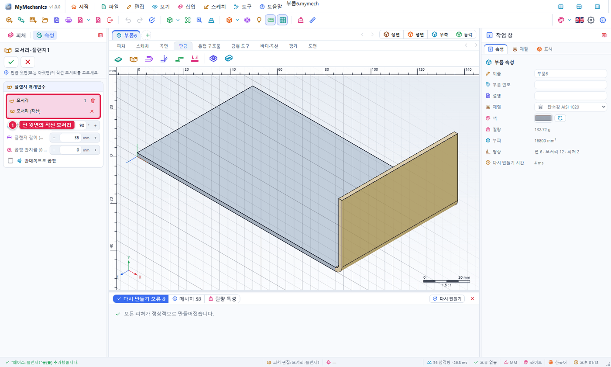
모서리 플랜지 — 고른 모서리에서 90° 세우기 - 펼치기를 누릅니다. 굽힘 여유(각도 × (반지름 + K × 두께))를 넣어 계산한 전개도가 나옵니다. 다시 누르면 접힌 모양으로 돌아갑니다.
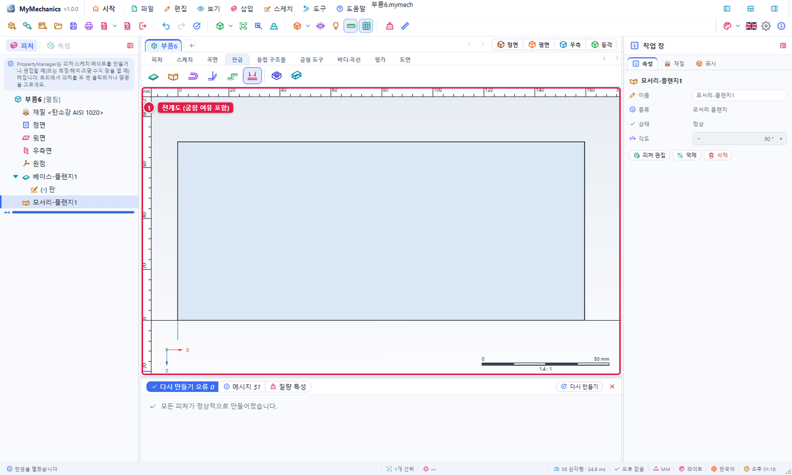
펼친 전개도
헴(되접기), 스케치 굽힘, 조그도 같은 탭에 있습니다. 예제 판금 섀시 케이스에 모두 들어 있습니다.
7과. 어셈블리와 메이트
어셈블리는 부품을 넣고 메이트(면과 면의 관계)로 위치를 정합니다.
- 새 어셈블리를 누릅니다. 왼쪽에 프로젝트의 부품과 예제 부품 목록이 나옵니다. 넣을 부품을 클릭하면 그래픽 영역에 들어갑니다. 첫 부품은 원점에 고정(
(f))됩니다.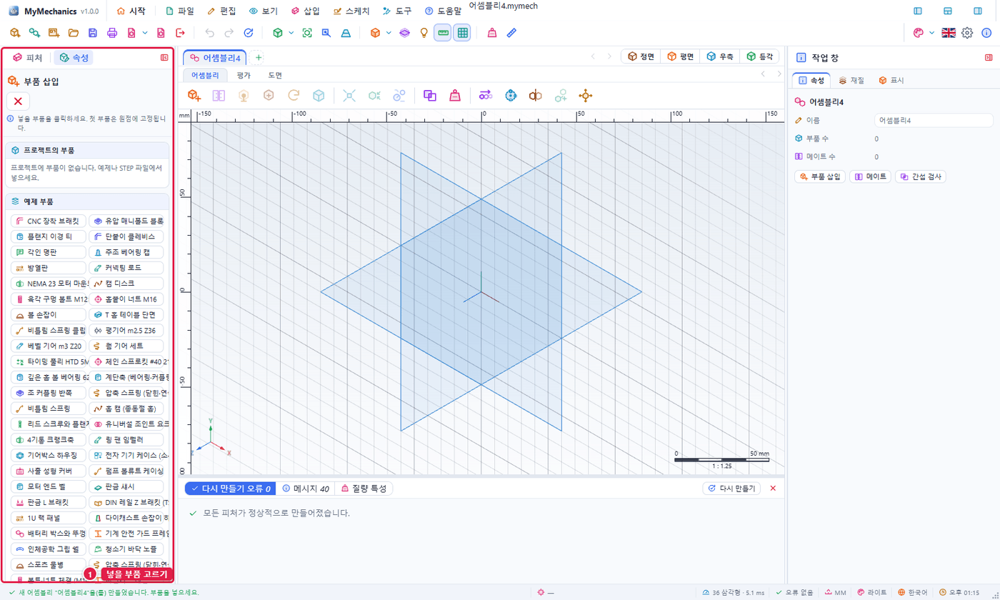
새 어셈블리 — 넣을 부품 고르기 - 어셈블리 › 부품 삽입으로 두 번째 부품을 넣습니다. 아직 메이트가 없어 자유롭게 움직이는 부품에는
(-)가 붙습니다. - 메이트를 누르고 두 부품의 원통면을 차례로 클릭합니다. 원통면 두 개는 동심이 먼저 제안되고, 부품이 바로 그 자리로 움직입니다. ✔를 누릅니다. 이어서 평평한 면 두 개를 고르면 일치가 제안됩니다.
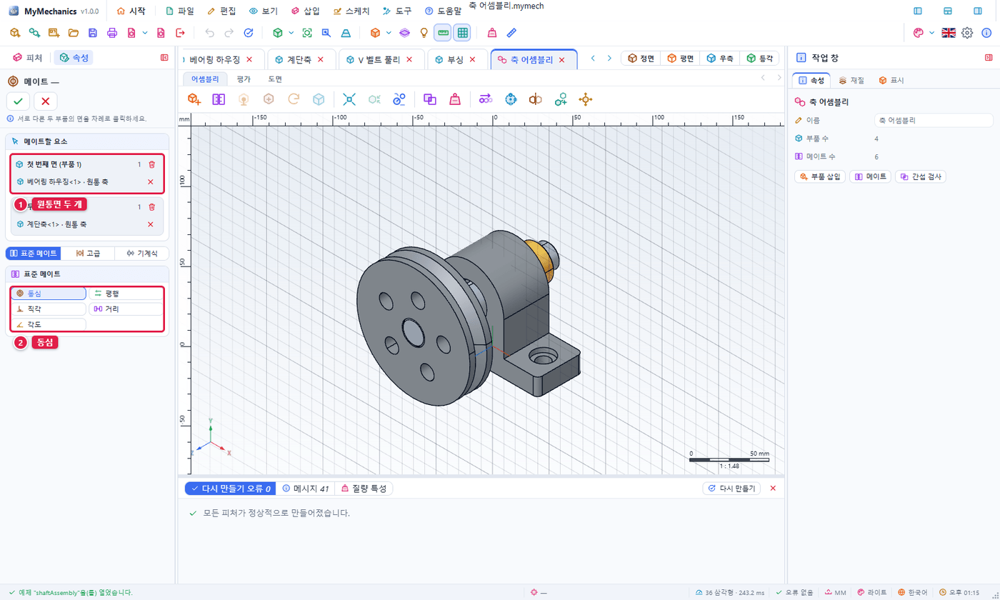
메이트 — 원통면 두 개를 동심으로 - 메이트는 트리의 메이트 폴더에 쌓입니다. 위치가 모두 정해진 부품은
(-)가 없어지고, 서로 맞지 않는 메이트는 빨간색이 됩니다.
어셈블리 트리와 메이트 폴더
예제 축 어셈블리와 2단 기어 감속기를 열면 완성된 메이트를 볼 수 있습니다. 메이트 PropertyManager의 고급·기계식 버튼에는 폭·거리 제한, 기어·랙 피니언·나사·힌지 메이트가 있습니다.
8과. 모션 스터디
기어·나사·랙 피니언 메이트로 이어진 부품은 모터 하나로 함께 움직입니다.
- 예제 2단 기어 감속기를 엽니다(시작 화면 › 예제 › 어셈블리).
- 어셈블리 › 모션 스터디를 누릅니다. 이 예제에는 입력축에 회전 모터가 이미 달려 있습니다. 새 모터는 부품의 원통면을 클릭해 답니다(회전 모터 rpm, 직선 모터 mm/s).
- 재생을 누르거나 시간 막대를 끌어 원하는 순간을 봅니다. 입력축이 돌면 기어 메이트로 이어진 중간축과 출력축이 기어비대로 따라 돕니다.
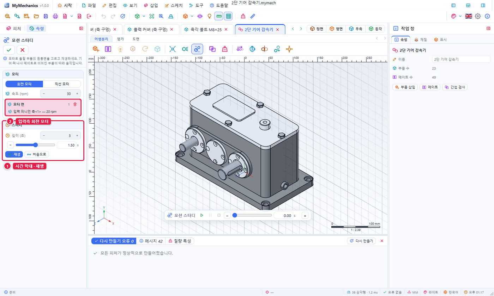
모션 스터디 — 모터와 시간 막대 - 분해도를 누르면 부품이 바깥으로 벌어집니다. 다시 누르면 접힙니다.

6축 로봇 예제의 분해도
9과. 도면 — 단면도와 부품표
- 1–4과에서 만든 부품의 탭으로 돌아가 도면 › 도면 만들기를 누릅니다. A3 시트에 정면도·평면도·우측면도와 등각 보기가 놓이고, 척도는 시트에 맞게 자동으로 정해집니다. 오른쪽 작업 창에서 시트 크기·척도·투상법을 바꿉니다.
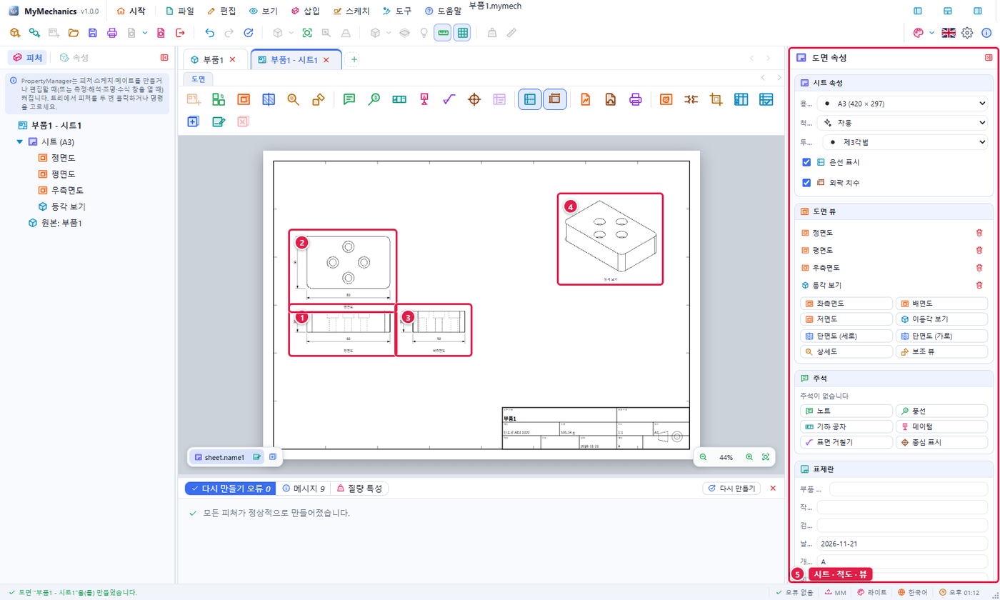
새 도면 — 표준 3면도와 등각 보기 - 정면도를 클릭해 고르고 단면도를 누릅니다. 가운데를 자른 단면도 A-A가 해칭과 함께 놓이고, 정면도에 절단선과 화살표가 그려집니다.
- 상세도를 누르면 고른 부분을 2배로 키운 상세도 B가 생깁니다. 뷰는 끌어서 옮길 수 있습니다.
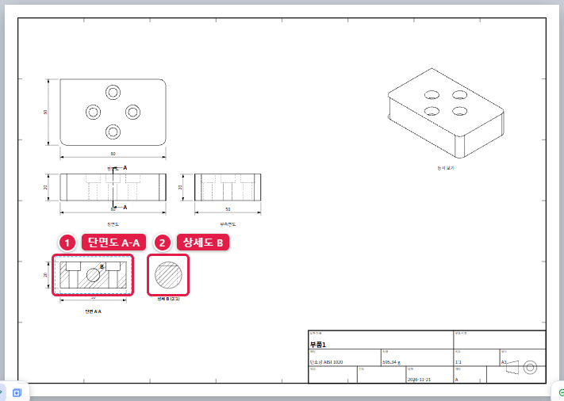
단면도 A-A와 상세도 B - 어셈블리에서 도면을 만들고 BOM을 누르면 표제란 위에 부품 번호·이름·재질·수량 표가 놓입니다.
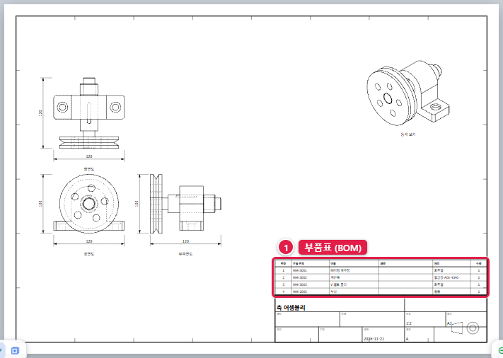
어셈블리 도면의 부품표 - DXF나 SVG로 내보내거나 Ctrl+P로 인쇄합니다. 기하 공차·데이텀·표면 거칠기·풍선은 도면 탭의 주석 버튼으로 넣습니다.
10과. 정적 해석
- 해석할 부품을 열고 평가 › 해석을 누릅니다. 해석 종류는 정적입니다. 재질의 탄성 계수와 항복 강도가 PropertyManager에 나옵니다.
- 고정 면 상자를 누르고 고정할 면(벽에 붙은 쪽)을 클릭합니다. 다음에 하중 면 상자를 누르고 힘을 받을 면을 클릭합니다.
- 힘
200N, 방향 −Y를 고릅니다. 해상도는 클수록 정확하지만 오래 걸립니다.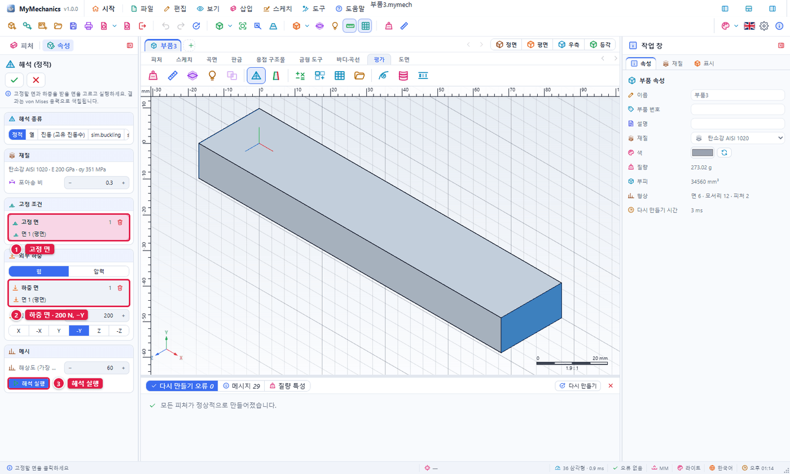
해석 준비 — 고정 면, 하중 면, 힘 - 해석 실행을 누릅니다. 바디가 von Mises 응력으로 칠해지고(파랑 → 빨강), 최대 응력·최대 변위·최소 안전율이 나옵니다. 안전율이 1보다 작으면 항복한다는 뜻입니다. 변형 형상을 켜면 휜 모양을 과장해서 보여 줍니다.
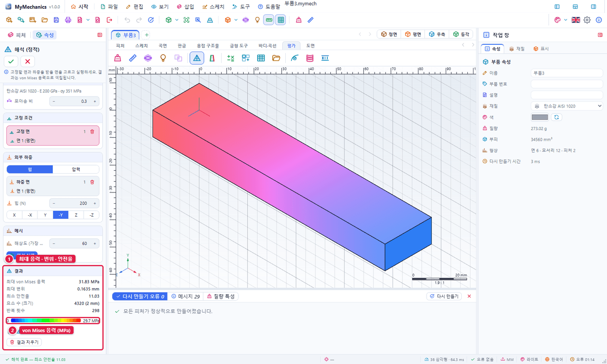
정적 해석 결과 — 응력 분포와 안전율
해석 종류를 열로 바꾸면 온도 분포를, 진동으로 바꾸면 고유 진동수와 모드 형상을 구합니다. 사용 설명서 8장을 보세요.
마치며
여기까지 왔다면 MyMechanics의 주요 흐름을 모두 해 본 셈입니다. 시작 화면의 예제 75개(기본 부품, 기계 요소, 하우징, 고급, 어셈블리·도면)를 열어 트리의 피처를 하나씩 두 번 클릭해 보면, 각 기능이 실제로 어떻게 쓰였는지 볼 수 있습니다. 모든 명령과 옵션은 사용 설명서에 정리되어 있습니다.